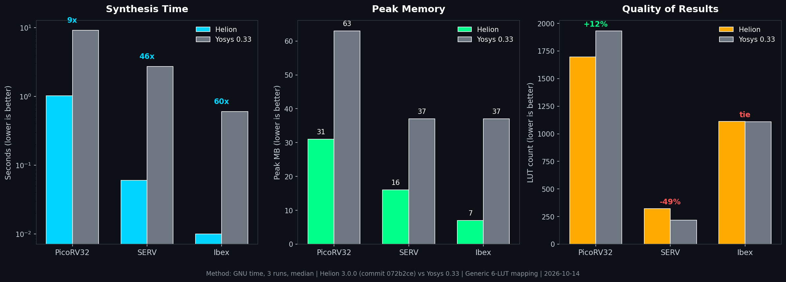

Benchmarks
Helion v3.0.0 vs Yosys 0.33, synthesis only, generic 6-LUT mapping, measured 2026-10-14 with GNU time (3 runs, median). Same RTL, same target, same stage. Every number below is measured. The caveats are printed next to the numbers, because that is how it should be.
| Design | Helion time | Yosys time | Speedup | Helion mem | Yosys mem | Helion LUTs | Yosys LUTs |
|---|---|---|---|---|---|---|---|
| PicoRV32 | 1.02 s | 9.12 s | 8.9x | 31 MB | 63 MB | 1,697 | 1,932 |
| SERV | 0.06 s | 2.73 s | 45x | 16 MB | 37 MB | 323 | 217 |
| Ibex | 0.01 s | 0.60 s | 60x | 7 MB | 37 MB | 1,112 | 1,110 |
Method: /usr/bin/time -v, 3 runs each, median.
Helion: helion synth <design>.v (commit 072b2ce).
Yosys: yosys -p "read_verilog <d>.v; synth -top <top>; abc -lut 6; stat".
Honesty check: On SERV, Yosys produces 33% fewer LUTs than Helion. That QoR gap is the next optimization target. On PicoRV32 Helion uses 12% fewer LUTs. Speed and memory wins are consistent; area is mixed.

v2.0.5 full-flow numbers (2026-10-10)
10 real designs, identical RTL, Helion v2.0.5 vs Yosys 0.69 + nextpnr-ecp5. Helion targeted its HL10T die (8,192 LUT6); the baseline targeted a Lattice LFE5U-25F (24k LUT4).
| Design | Helion LUT6 | Helion WNS (ps) | Helion wall | Yosys+nextpnr LUT4 | Yosys+nextpnr wall | Verdict |
|---|---|---|---|---|---|---|
| PicoRV32 | 2,477 | 8,700 | 3.5 s | 830 | 10.4 s | OK |
| AES-128 | 6,534 (80% of die) | 8,700 | 1.9 s | 11,584 | ~332 s | OK |
| SHA-256 | 1,865 | 8,220 | 0.9 s | 2,753 | ~146 s | OK |
| UART | 379 | 9,600 | 0.3 s | 133 | 5.8 s | OK |
| SPI master | 62 | 9,580 | 0.03 s | 13 | 3.6 s | OK |
| I2C master | 822 | 9,580 | 0.9 s | 183 | 5.0 s | OK |
| SERV | 395 | 7,620 | 0.7 s | 133 | 1.9 s | OK |
| MIPS 1-cycle | 397 | 9,600 | 0.09 s | no baseline: Yosys rejected an inferred latch in the RTL | OK (Helion only) | |
| CORDIC | 385 | 9,600 | 0.08 s | no baseline: Yosys could not elaborate a variable-bound loop | OK (Helion only) | |
| Ibex RV32 | 11,572 LUTFFs wanted vs 8,192 on die | no baseline: Yosys 0.69 cannot parse the SystemVerilog assignment patterns | Over capacity, refused | |||
Full report with stage breakdowns, method, and reproductions steps: benchmark-report-2026-10-10.md.
Read honestly
- Different fabrics. Helion targets its own LUT6 HL10T die; the baseline targets Lattice ECP5 (LUT4). Absolute LUT counts are not silicon-to-silicon comparable.
- Speed. Helion runs 3-100x faster wall-clock on identical RTL (AES-128: 1.9 s vs ~5.5 min). Helion is a straight pipeline with no heavy optimization passes; Yosys spends its time in ABC and nextpnr in simulated-annealing placement.
- Area. Yosys+ABC still produces 2-5x fewer LUTs on the same RTL. Part of that is LUT4 vs LUT6 accounting; most of it is ABC's logic optimization vs Helion's direct AIG to FlowMap mapping. Helion trades area for speed and simplicity, a stated bring-up-stage tradeoff.
- Timing. Every Helion run met the 10 ns target with positive WNS. Helion's delay model is simpler and more optimistic than nextpnr's signoff-style STA, so do not compare MHz head-to-head. Calibration is on the roadmap.
- Robustness. Helion's SystemVerilog frontend parsed all 10 designs, including three Yosys 0.69 could not handle. 9 of 10 fit the die and routed with zero congestion.
- Over capacity fails loudly. Ibex wants ~11.6k LUTs on an 8k-LUT die. The flow errors naming the overused resource instead of emitting a clipped bitstream.
Measured wins
| Campaign | Result |
|---|---|
| Perf | Synthesis allocations 24.2M to ~409k (-98%); frontend wall time -69% |
| Area | uart 420 to 244 LUTs (-42%); PicoRV32 cross-cone sharing -10%, miter-proven each round |
| Correctness | 168/168 helion-sv tests, 198/198 GUI tests green; QoR gate green; gold WNS_PS=9640 untouched |